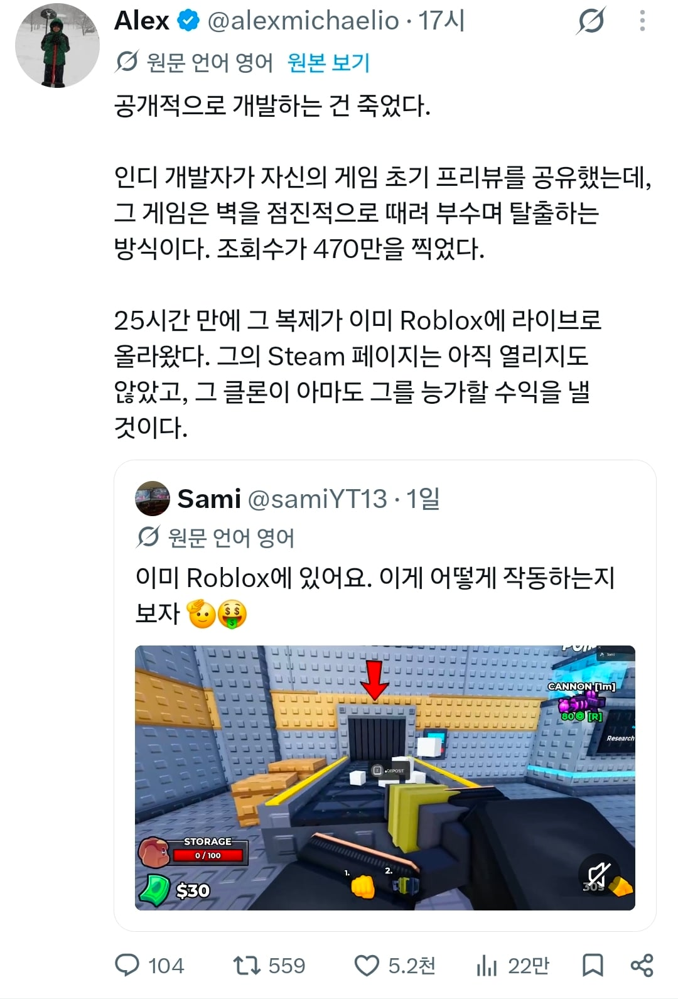

괜찮은 인디게임이 나오면 빠르게 ai로 카피한뒤 다 로블록스에 내서 돈버는게 너무 흔한 나머지 데모나 프리뷰 영상을 공개 안하고 바로 출시해야할 정도

괜찮은 인디게임이 나오면 빠르게 ai로 카피한뒤 다 로블록스에 내서 돈버는게 너무 흔한 나머지 데모나 프리뷰 영상을 공개 안하고 바로 출시해야할 정도
얼마전에 SI업체 대표들이랑 대화할 기회가 있어서 이것저것 물어봤었는데 지금도 SI시장은 싹다 죽었고 소프트웨어를 판매하는 컨셉은 그냥 전멸이라 자기들도 어떻게 해야할지 모른다고하더라.....전전직장 대표가 중국 공장돌면서 팔릴만한 제품 계약하고 딱 3개월동안 팔고 손 털어야지 안그러면 다른 업체에서도 똑같은거 우후죽순 생겨나서 손해본다고 했었는데 그게 소프트웨어 레벨까지 내려온거야...
로블록스 잼민이들이 카피못하게 아예 선정적으로 가던가
퀄리티 저급한 게임은 금방 카피하지, 못카피하게 큰 규모로 만들던가 해야함, 어짜피 상대로 나도 똑같은 AI 쓰니까
애초에 저런 인디게임 자체가 조또 아닌 아이디어로 만든 플래시 게임 그 이상도 그 이하도 아닌 작품이기 때문이지 ㅋㅋ 개발력 요구하는 상위 랭크 개발팀만 생존하는 시대임.